노티드 우베 디저트
노티드 우베 디저트는 보라색 크림과 달콤한 코코넛 맛이 어우러진 이색 디저트입니다. 부드러운 우베 크림이 가득 찬 도넛과 케이크는, 한 번 맛보면 잊을 수 없는 달콤한 경험을 선사합니다.
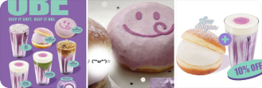
트렌드
노티드 우베 디저트는 보라색 크림과 달콤한 코코넛 맛이 어우러진 이색 디저트입니다. 부드러운 우베 크림이 가득 찬 도넛과 케이크는, 한 번 맛보면 잊을 수 없는 달콤한 경험을 선사합니다.

넷플릭스 ‘사냥개들’ 시즌2가 드디어 공개되었습니다! 김민준, 이해영 주연의 액션 느와르 드라마, 숨 막히는 전개와 화려한 액션으로 시청자들을 사로잡고 있습니다. 지금 바로 TOP 10 순위를 확인하세요!
넷플릭스 ‘사냥개들 시즌2’, 디즈니+ ‘폭싹 속았수다’, 티빙 ‘환상연가’ 등 2026년 상반기 OTT 신작 드라마가 시청률과 화제성 모두 상위권을 차지하며 인기를 끌고 있어요.
WHO에 따르면 2026년 3월 기준 전 세계적으로 JN.1이 관심 변이로, XFG·NB.1.8.1·KP.3.1.1·BA.3.2 등이 관찰 대상 변이로 추적되고 있습니다. 일부 지역에서 신규 변이 확산세가 포착됐지만, 현재까지는 중증도 급증 근거는 제한적이며 보건당국은 전파력과 면역회피 가능성을 계속 모니터링 중입니다.
이란이 사실상 봉쇄 상태인 호르무즈 해협과 관련해 오만 측 항로를 이용하는 선박에 대해서는 공격을 자제하겠다는 제한적 개방안을 미국 측에 제시한 것으로 전해졌습니다. 이번 제안은 미국·이란 휴전 이후 긴장 완화와 해상 물류 정상화를 겨냥한 신호로 해석되지만, 미국의 수용 여부는 아직 확인되지 않았습니다.
개발자 사이에서 Claude Code, Cursor, GitHub Copilot을 비교하는 콘텐츠가 늘고 있습니다. 자연어 이해도와 코드베이스 컨텍스트 처리, 에디터 통합 방식에서 차이가 두드러져 도구 선택 기준이 빠르게 변하고 있어요.
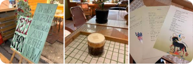
2026 봄 벚꽃 명소가 SNS에서 화제입니다. 진해 군항제, 여의도 윤중로, 석촌호수, 경주 보문단지, 제주 전농로가 인기 코스로 꼽히며, 사진 명소와 야경 포인트도 함께 주목받고 있어요.
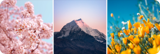
대전 오월드에서 탈출한 늑대 ‘늑구’를 찾기 위해 당국이 열화상 카메라가 달린 드론을 투입해 야산 일대를 집중 수색하고 있습니다. 다만 비와 넓은 산악 지형 탓에 추적에 어려움을 겪고 있어, 당국은 권역별 수색과 함께 포획틀 설치 등 대응을 병행하고 있습니다.
중국 SNS에서 시작된 ‘말빵’이 국내 카페들로 번지며 ‘밤티 말빵’이라는 이름으로도 화제를 모으고 있어요. 멍한 표정의 말 얼굴 모양 크림빵으로, 피곤한 직장인을 닮은 비주얼이 밈처럼 소비되며 인기를 끄는 중입니다. 아직 대형 뉴스 이슈라기보다는 SNS·디저트 트렌드에 가까운 흐름이에요.
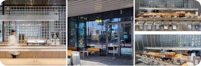
BTS의 ‘Hooligan’은 정규 앨범 《ARIRANG》 수록곡으로, 타이틀곡 ‘SWIM’과는 다른 반항적이고 강한 에너지의 분위기로 주목받고 있습니다. RM·제이홉·슈가가 공동 작업에 참여했으며, 4월 8일 0시(KST) 뮤직비디오가 공개되면서 팬들 사이에서 대표 인기 B사이드 곡으로 떠올랐습니다.
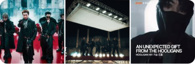
MBN ‘2026 한일가왕전’이 4월 14일 첫 방송을 시작하며 한일 대표 TOP7의 국가대항전 구도를 본격화했습니다. 첫 회는 한국과 일본 팀이 맞붙는 탐색전 ‘100초 전’으로 꾸며졌고, 차지연이 652점으로 1위를 기록하며 강한 인상을 남겼습니다. 프로그램은 첫 방송에서 전국 시청률 5.6%, 최고 6.4%를 기록하며 동시간대 1위에 올랐습니다.
서울 양천구 목동의 5층짜리 아파트 2층에서 4월 16일 오전 불이 나 주민 2명이 연기를 흡입해 병원으로 옮겨졌습니다. 소방당국은 오전 10시 10분 신고를 받고 인력 88명 안팎과 장비 30여 대를 투입해 약 40분 만인 10시 52분께 불을 완전히 껐습니다. 현재 정확한 화재 원인을 조사 중이며, 일부 보도에서는 2층 작은 방이나 전기장판 발화 가능성도 제기됐습니다.
16시간 공복 + 8시간 식사 패턴의 16:8 간헐적 단식이 다시 트렌드로 떠오르고 있습니다. 체중 감량과 인슐린 민감도 개선 효과가 보고되며, 직장인 점심·저녁 루틴에 맞춰 변형하는 사례가 늘고 있어요.

앤디 위어의 SF 소설 프로젝트 헤일메리는 정체불명 현상으로 죽어가는 태양과 지구를 구하기 위해 우주선에서 홀로 깨어난 과학자 라일랜드 그레이스의 사투를 그립니다.
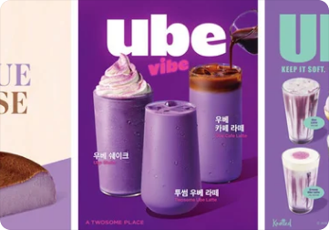
노티드 우베 디저트는 보라색 크림과 달콤한 코코넛 맛이 어우러진 이색 디저트입니다. 부드러운 우베 크림이 가득 찬 도넛과 케이크는, 한 번 맛보면 잊을 수 없는 달콤한 경험을 선사합니다.
넷플릭스 ‘사냥개들’ 시즌2가 드디어 공개되었습니다! 김민준, 이해영 주연의 액션 느와르 드라마, 숨 막히는 전개와 화려한 액션으로 시청자들을 사로잡고 있습니다. 지금 바로 TOP 10 순위를 확인하세요!
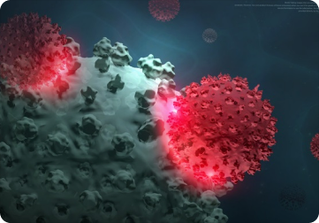
WHO에 따르면 2026년 3월 기준 전 세계적으로 JN.1이 관심 변이로, XFG·NB.1.8.1·KP.3.1.1·BA.3.2 등이 관찰 대상 변이로 추적되고 있습니다. 일부 지역에서 신규 변이 확산세가 포착됐지만, 현재까지는 중증도 급증 근거는 제한적이며 보건당국은 전파력과 면역회피 가능성을 계속 모니터링 중입니다.
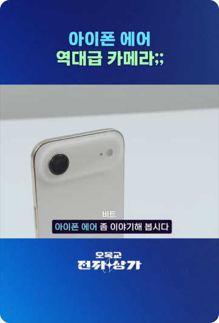
아이폰 역사상 가장 대담한 두 제품, ‘아이폰 17’과 ‘아이폰 에어’.
이란이 사실상 봉쇄 상태인 호르무즈 해협과 관련해 오만 측 항로를 이용하는 선박에 대해서는 공격을 자제하겠다는 제한적 개방안을 미국 측에 제시한 것으로 전해졌습니다. 호르무즈 해협은 전 세계 원유·가스 수송의 약 20%가 지나는 전략 요충지여서, 관련 협상 추이에 따라 국제 유가와 공급망 변동성도 계속 주목받고 있습니다.
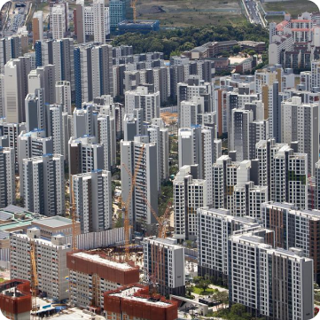
2026년 전국 공동주택 공시가격은 평균 9.16% 상승했습니다. 서울은 18.67% 올라 전국 평균의 두 배에 달합니다.
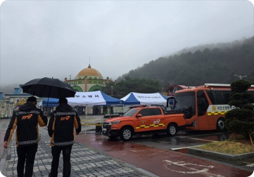
대전 오월드에서 탈출한 늑대 ‘늑구’를 찾기 위해 당국이 열화상 카메라가 달린 드론을 투입해 야산 일대를 집중 수색하고 있습니다. 다만 비와 넓은 산악 지형 탓에 추적에 어려움을 겪고 있어, 당국은 권역별 수색과 함께 포획틀 설치 등 대응을 병행하고 있습니다.
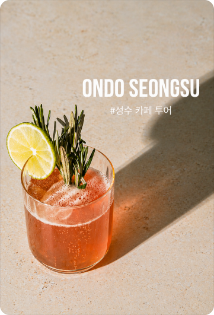
자연광이 가득한 2층 통유리 공간 — 성수동 대표 감성 카페로, 시그니처 크림라떼와 수제 디저트가 인기입니다.
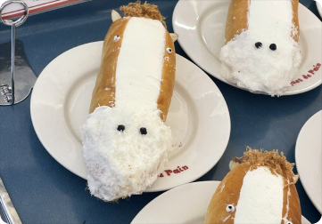
중국 SNS에서 시작된 ‘말빵’이 국내 카페들로 번지며 ‘밤티 말빵’이라는 이름으로도 화제를 모으고 있어요. 멍한 표정의 말 얼굴 모양 크림빵으로, 피곤한 직장인을 닮은 비주얼이 밈처럼 소비되며 인기를 끄는 중입니다.
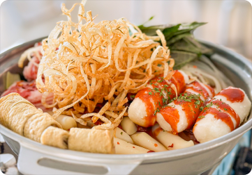
성수에서 가볍게 한 끼 즐기고 싶을 때 들르기 좋은 떡볶이집 느낌이에요. 떡볶이 연구소 성수점은 이름처럼 메뉴 조합 보는 재미가 있고, 성수 특유의 힙한 분위기까지 더해져 친구랑 들르기 좋더라고요.
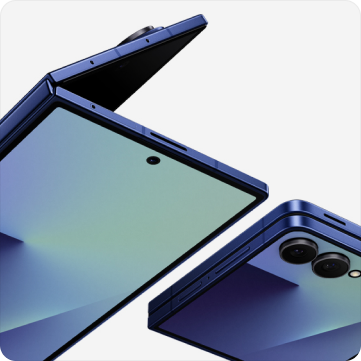
삼성전자가 차세대 폴더블폰 갤럭시 폴드7을 공식 발표했습니다. 두께 9.9mm의 초슬림 설계와 AI 기반 멀티태스킹 기능이 핵심 변화로 꼽힙니다.
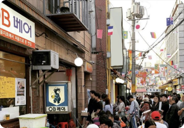
서울 을지로의 대표 핫플레이스 — 레트로 감성과 힙한 바 거리가 공존하는 골목으로, 퇴근 후 즐기기 좋은 곳입니다.
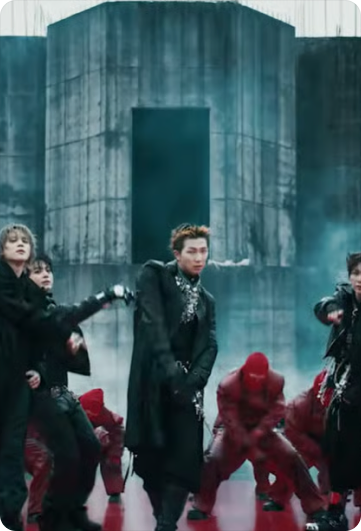
BTS의 ‘Hooligan’은 정규 앨범 ‘ARIRANG’ 수록곡으로, 타이틀곡 ‘SWIM’과는 다른 반항적이고 강한 에너지의 분위기로 주목받고 있습니다.
MBN ‘2026 한일가왕전’이 4월 14일 첫 방송을 시작하며 한일 대표 TOP7의 국가대항전 구도를 본격화했습니다. 차지연이 652점으로 1위를 기록했으며, 첫 방송에서 전국 시청률 5.6%로 동시간대 1위에 올랐습니다.
서울 양천구 목동의 5층짜리 아파트 2층에서 4월 16일 오전 불이 나 주민 2명이 연기를 흡입해 병원으로 옮겨졌습니다. 소방당국은 약 40분 만에 불을 완전히 껐으며, 현재 정확한 화재 원인을 조사 중입니다.
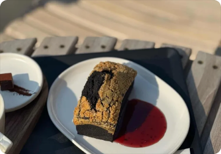
한남에서 분위기 좋은 카페 찾을 때 들르기 괜찮은 곳이에요. 오베뉴 한남은 개방감 있는 인테리어에 테라스 감성까지 더해져서, 커피 한잔하면서 수다 떨거나 작업하기 좋더라고요.
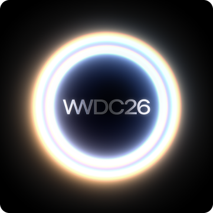
애플이 WWDC 2026에서 시리 기반 AI 에이전트를 공개했습니다. 앱 간 자동 연동과 개인 맞춤형 추천이 핵심으로, 하반기 iOS 20에 탑재 예정입니다.